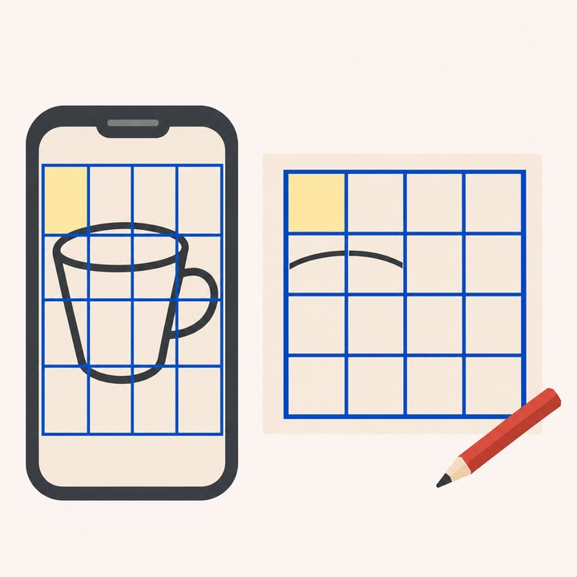

iPhone・iPad・Android の模写グリッドとトレース台
写真と紙に、
同じマス目を。
写真にマス目を引き、紙にも同じ数のマス目を mm で出します。1マスずつ見比べて描けば、形がくずれません。印刷用のマス目の PDF、画面をトレース台にする写し方、カメラに下絵を重ねる写し方もあります。
App Store・Google Play で配信予定買い切りで全部の機能が使えます。課金の画面・広告・回数の制限はありません。

こんな困りごとのために
描く前に課金や広告が出る
ますうつしは買い切りです。開いてすぐ描けます。1日の回数の制限もありません。
紙のマス目の大きさが分からない
紙を選ぶと「この紙なら 1マス 25mm」と出します。A 判・B 判・画用紙・キャンバスの号、自分の紙の大きさにも合わせられます。
紙に線を引くのが手間
紙のマス目を番号つきの PDF で書き出して、そのまま印刷できます。
トレース台にすると画面が暗くなる
トレース台のあいだは明るさを最大にし、自動で消えないようにします。画面を固定すれば、紙が触れても下絵が動きません。
何をすればいいか分からない
はじめに3枚の案内で、写真を選ぶ・マス目・紙に写す、の流れを見せます。
写真を外に出したくない
写真は端末の中に置きます。通信は iCloud だけで、カメラの映像は保存も送信もしません。
できること
| マス目 | 四角・比例・対角線・色と太さ・A1 の番号・描き終えたマスの印 |
|---|---|
| 紙 | A3・A4・A5・B4・B5・画用紙（八つ切・四つ切）・キャンバス（SM・F4〜F10）・自分の紙・余白 |
| 下絵 | 切り取り・白黒・線を強める・明るさとコントラスト・1マスを大きく |
| 写し方 | マス目を見ながら・トレース台（明るさ最大・画面を固定）・カメラに重ねる |
| 書き出し | 紙のマス目の PDF（番号つき）・マス目つきの写真 |
| データ | iCloud で iPhone と iPad をそろえる・アカウントなし・解析と広告なし |
使い方・プライバシーポリシー・利用規約もご覧ください。